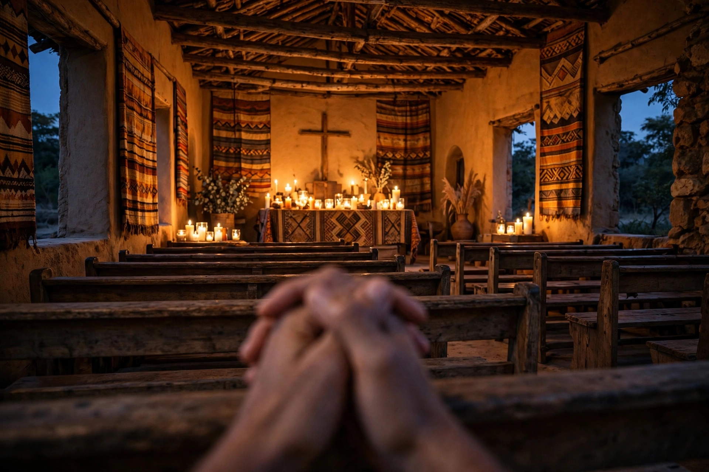

Persecuted ChurchIglesia Perseguida
On the Day of Prayer for the Persecuted Church, Nigeria stands at the center of the world's griefEn el Día de Oración por la Iglesia Perseguida, Nigeria se convierte en el centro del dolor mundial
As Christians worldwide pray today for believers who suffer for their faith, new figures show that 3,490 of the 4,849 Christians killed for faith-related reasons in the past year died in Nigeria — and fresh attacks in Kaduna keep adding names to the list.Mientras los cristianos de todo el mundo oran hoy por los creyentes que sufren por su fe, las nuevas cifras muestran que 3.490 de los 4.849 cristianos asesinados por motivos de fe en el último año murieron en Nigeria, y los nuevos ataques en Kaduna siguen sumando nombres a la lista.